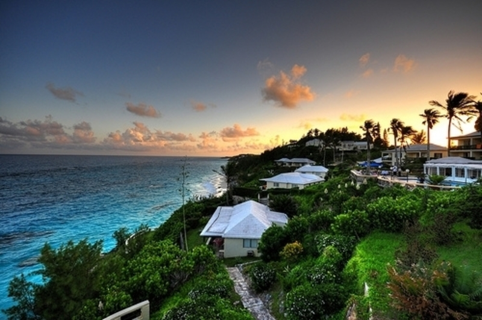
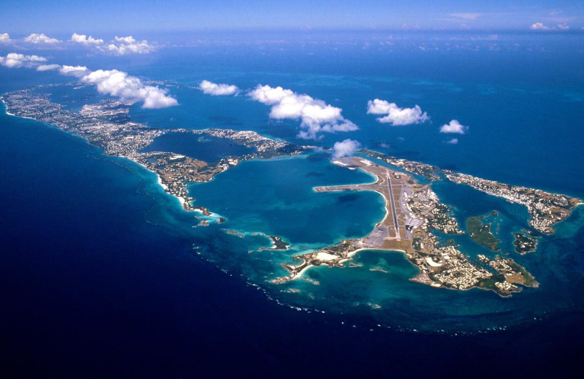

Bermuda
Bermuda offers an array of exquisite beaches of pink sand and turquoise water. The sand contains pink flecks that are the remains of a tiny organism known as red foam. This combined with tiny particles of broken shells and bits of coral create the pink hue of Bermuda's beautiful beaches.
Bermuda Satallite View
Lifeguards are stationed on some of the beaches during the summer; however, many are not and being aware of the undercurrents and never swimming alone are two good tips. There are some water activities with fabulous snorkeling and diving offered on the reefs off South Shore at the larger beaches.